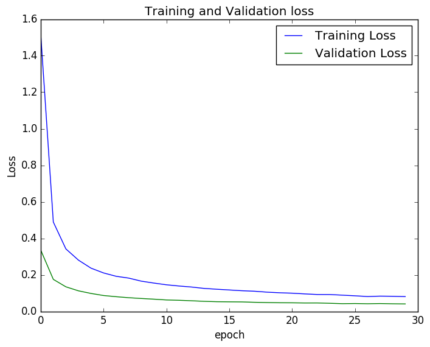

Neuralnetworkwithlasagne
CNN and two layer NN comparision with Theano and Lasagne to do handwritten digit recognition.
Neural Network with Theono and Lasagne on MNIST data
Sample Digits

Convolutional Neural Network model
Input Layer: 28 x 28
ConvLayer 1: 32 x 5 x 5
ConvLayer 2: 32 x 5 x 5
DenseLayer 1: 256
DenseLayer 2: 256 * 10
Using mini-batch: epoch - 30, test accuracy 99.15%
Each epoch took around 60-90 seconds. The training and validation loss is shown below 
2 Layer Neural Network Model
Input Layer size: 784 with 20% drop-out and ReLU activation
Hidden Layer size: 784 x 625 with 50% drop-out with ReLU activation
Output Layer: 625 x 10 with 50% drop-out with softmax activation
Without using mini-batch: epoch - 500, test accuracy 93%
Tried to train a simple 2 layer network with no minibatch. Got around 93% test accuracy after 500 epochs. The training and validation loss is shown below

Using mini-batch: epoch - 150, test accuracy 98.15%
Using mini-batch the learning is faster. Each epoch took around 6 seconds. The training and validation loss is shown below